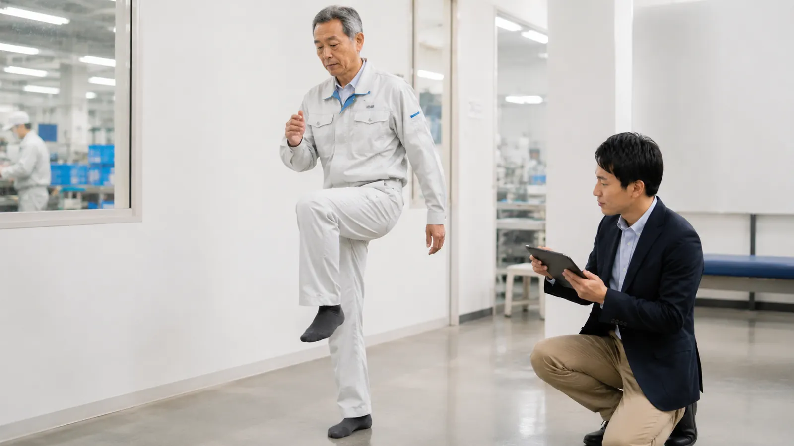

この記事の要点
- 制度：令和8年4月から、高年齢者の労働災害防止の措置が事業者の努力義務になり、国の指針が示されました。
- 体力：転倒等リスク評価セルフチェック票では、歩行能力・筋力、敏捷性、動的バランス、静的バランスを5つのテストで確認します。
- 環境：照度、段差、手すり、滑りやすい床、履物を点検し、人の注意だけに頼らない対策を先に進めます。
- 運用：同意の取り方や結果の扱い方を事前に決め、定期的に測って本人の気付きと職場の見直しにつなげます。
この記事が役立つ方
- 60歳以上の従業員や再雇用の従業員が増えている企業の総務・人事・安全衛生担当の方
- 「高年齢者の労働災害防止のための指針」に沿って何をすればよいか整理したい方
- 体力チェックを導入したいが、やり方や結果の扱い方に迷っている方
なぜ今、高年齢従業員の転倒対策なのか
厚生労働省の「令和7年 労働災害発生状況について」によると、令和7年の休業4日以上の死傷者135,333人のうち、事故の型別で最も多いのは「転倒」の37,195人（27.5％）でした。年齢別では、60歳以上が42,318人で全体の31.3％を占めています。同資料では、年齢が高くなるほど労働災害の発生率が高くなる傾向も示されています。
こうした状況を受けて、改正労働安全衛生法第62条の2により、令和8年4月1日から、高年齢者の労働災害防止のために必要な措置を講ずることが事業者の努力義務になりました。具体的な進め方は、厚生労働省の「高年齢者の労働災害防止のための指針」（令和8年2月10日公示）にまとめられています。これまでの「エイジフレンドリーガイドライン」の考え方を引き継いだ内容です。
指針の柱は、体制づくりとリスクアセスメント、職場環境の改善、健康や体力の状況の把握、個々の状況に応じた対応、安全衛生教育の5つです。この記事では、転倒予防に直結する「体力の把握」と「職場環境の改善」を中心に整理します。
体力チェックでは何を測ればよいですか？
指針では、事業者と本人の双方が体力を客観的に把握するために体力チェックを継続して行うことが望ましいとされ、その方法の例として転倒リスクの身体機能セルフチェックが挙げられています。厚生労働省の「転倒等リスク評価セルフチェック票」は、次の5つのテストで構成されています。やり方と注意事項は「職場のあんぜんサイト」に掲載されています。
| テスト | 分かること | やり方の概要 |
|---|---|---|
| 2ステップテスト | 歩行能力・下肢の筋力 | 反動をつけずに大股で2歩進み、両足をそろえる。進んだ距離を身長で割る。 |
| 座位ステッピングテスト | 下肢の敏捷性 | 椅子に座り、床の2本のラインの内側と外側に、つま先を20秒間すばやく交互につく回数を数える。 |
| ファンクショナルリーチ | 動的バランス | 壁の横に立って両腕を肩の高さに上げ、足を動かさずに前へ伸ばせる距離を測る。 |
| 閉眼片足立ち | 静的バランス | 目を閉じて片足で立っていられる時間を測る。 |
| 開眼片足立ち | 静的バランス | 目を開けたまま、両手を腰に当てて片足で立っていられる時間を測る。 |
各テストの結果は1〜5点で評価します。あわせて9問の質問票で「自分の体力をどう思っているか」を答え、測定結果と自己評価を同じレーダーチャートに書き込みます。セルフチェック票では、実際の身体機能が自己評価より低い場合、その差が大きいほど注意が必要だと説明されています。「まだ大丈夫」という思い込みと実際の体力のずれに本人が気付けることが、このチェックの大きな特徴です。
体力チェックを安全に行うには？
職場のあんぜんサイトでは、測定中の転倒を防ぐための注意事項が示されています。実施前に次の点を確認してください。
- 滑りにくい床と靴で行い、周囲に物を置かない（2ステップテスト）
- 椅子が動かないよう固定する（座位ステッピングテスト）
- 片足立ちのテストでは補助者が近くで立ち会い、終了の条件を事前に伝える
- 当日に痛みやめまい、体調不良がある人は無理に行わない。痛みやしびれが続いている人は、医療機関への相談を優先する
結果はどう扱えばよいですか？
体力チェックは、扱い方を誤ると「測られたくない」「配置を変えられるのでは」という不安につながります。指針では次のような考え方が示されています。
- 基準を設けない場合：結果は本人の気付きにつなげる。
- 基準を設ける場合：職務の内容に照らして合理的な水準にする。基準に満たない人には、まず職場環境の改善と体力の維持・向上の取組を行う。
- 事前のルールづくり：本人の同意の取り方や情報の扱い方を、安全衛生委員会などで事前に決めておく。
- 継続：一度きりではなく定期的に行い、前回との変化を見る。指針では、休業から復職する際に休業前の結果と比べることも有効とされています。
職場環境はどこを確認すればよいですか？
体力の低下を前提に、転びにくい環境を整えることが先です。指針の「職場環境の改善」に示されている内容をもとに、点検の項目を整理しました。
- 通路を含む作業場所の照度が確保され、極端に暗くなる場所や明暗の差が大きい場所がない
- 通路の段差を可能な限り解消している。解消できない段差には表示や掲示で注意を促している
- 階段に手すりがある
- 水や油で滑りやすい場所に防滑素材を使い、こまめに清掃している
- 滑りにくい靴（防滑靴）を履くよう決めている
- 警報音が聞き取りやすい音域・音量になっている
- 重い物の持ち運びや抱え上げに、台車や補助機器、リフトなどを使える
指針では、転倒は危険と感じにくい場所で起きやすいため、わずかな段差にも注意を向けるよう教育することも示されています。点検は、実際にその場所を使う従業員と一緒に歩いて行うと、日ごろ気になっている場所が見つかりやすくなります。北海道では、冬季の凍結路面への対策も合わせて確認しましょう（冬の転倒災害の記事で詳しく解説しています）。
担当者向け：導入の進め方（例）
以下は進め方の一例です。職場の規模や体制に合わせて調整してください。
| 時期 | やること |
|---|---|
| 準備 | 安全衛生委員会などで目的、対象、同意の取り方、結果の扱い方を決める |
| 1回目 | 体力チェックと職場環境の点検を行い、本人に結果を返す |
| 直後 | 危険箇所の改善、運動や体操の取組、教育を始める |
| 半年〜1年後 | 同じ方法で再度チェックし、変化と取組の状況を確認する |
外部の専門家に依頼すると、何をしてもらえるか
社内で迷いやすいのは、測定を安全に行うことと、結果を職場の対策や本人の運動に結びつけることです。プライズネス健康経営サポートでは、理学療法士が職場を訪問し、筋力・バランス・歩行などの身体機能チェックと結果の説明、転びやすい場所や作業の確認、従業員向けの運動指導や研修を行います。内容はサービス内容、費用の目安は料金プランでご確認いただけます（例：単発セミナー55,000円〜、職場訪問評価132,000円〜、従業員個別チェックは要相談）。なお、本サービスは医療行為ではなく予防のための支援です。
まずは自社の状態を知ることから
「体力チェックを始めたいが、やり方や結果の扱いに不安がある」という段階からご相談いただけます。まずは職場の腰痛リスクを3分でセルフチェックし、その結果をもとに無料相談をご利用ください。
よくある質問
高年齢者の転倒防止対策は義務ですか？
令和8年4月1日から、改正労働安全衛生法第62条の2により、高年齢者の労働災害防止のために必要な措置を講ずることが事業者の努力義務になりました。具体的な進め方は、厚生労働省の「高年齢者の労働災害防止のための指針」（令和8年2月10日公示）に示されています。
体力チェックは何歳から行えばよいですか？
指針では、主に高年齢者を対象に継続して行うことが望ましいとしたうえで、青壮年期から実施することも望ましいとしています。年齢で区切るより、全員で定期的に行い、本人が変化に気付ける形にすると続けやすくなります。
体力チェックの結果で配置を変えてもよいですか？
指針では、評価基準を設ける場合は職務内容に照らして合理的な水準にすること、基準に満たない人にはまず職場環境の改善と体力の維持・向上の取組を行うことが示されています。同意の取り方や情報の扱い方は、安全衛生委員会などで事前に決めておきます。
転倒等リスク評価セルフチェック票はどこで入手できますか？
厚生労働省のホームページと、職場のあんぜんサイトで公開されています。各テストのやり方と注意事項も職場のあんぜんサイトに掲載されています。
プライズネスに依頼すると何をしてもらえますか？
理学療法士が職場を訪問し、体力チェックの実施や結果の見方の説明、転びやすい場所や作業の確認、従業員向けの運動指導や研修を行います。医療行為ではなく予防のための支援です。
関連する記事
この記事は、公的機関などの公開資料をもとにAIを活用して作成しています。制度や数値は変わることがあるため、ご判断の際は出典の最新情報をご確認ください。医療上の判断が必要な症状については医療機関にご相談ください。
出典・参考：
厚生労働省「令和7年 労働災害発生状況について」（令和8年4月7日までの報告を集計した確定値）
厚生労働省「高年齢者の労働災害防止のための指針」について（公示）（令和8年2月10日公示、令和8年4月1日適用）
厚生労働省 労働政策審議会安全衛生分科会資料「高年齢者の労働災害防止のための指針について（報告）」
厚生労働省「転倒等リスク評価セルフチェック票」
厚生労働省 職場のあんぜんサイト「転倒等リスク評価セルフチェック」実施方法